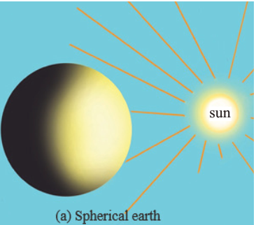
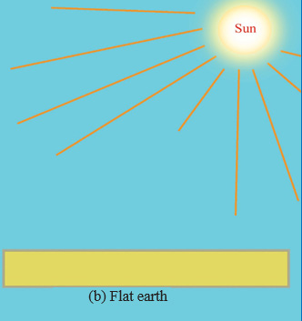
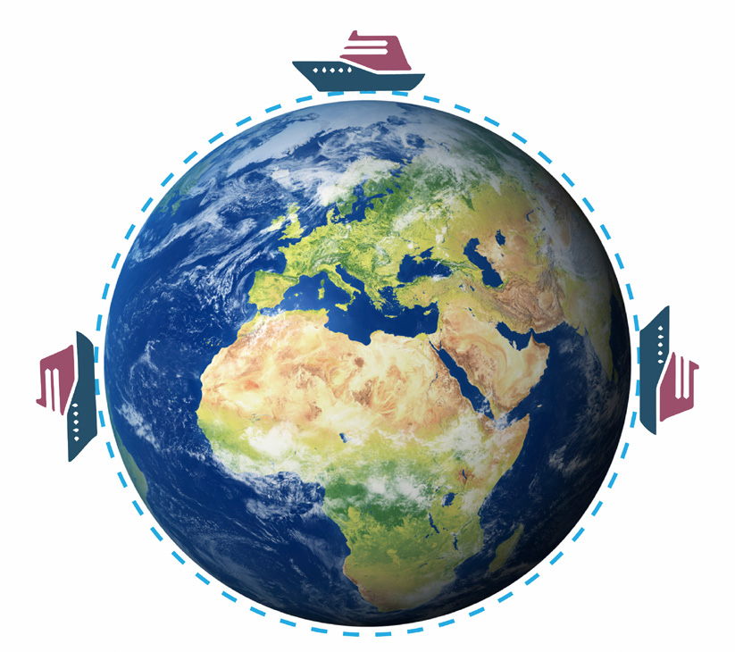
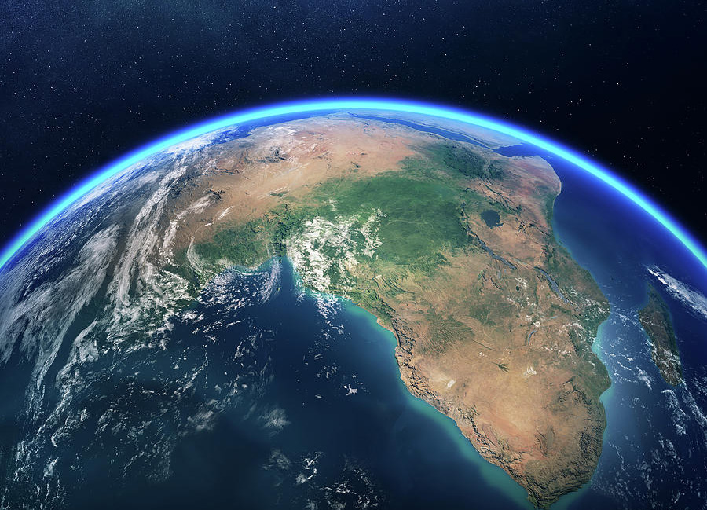

(i) Sunrise and sunset
The Sun rises and sets at different times in different places of the Earth. People in the East see the sun earlier than those in the West due the spinning of the Earth on its own axis from West to East (Figure 2.4 a). If the Earth was flat, the whole world would have sunrise and sunset at the same time (Figure 2.4 b).


(ii) Circumnavigation of the Earth
If you travel from a certain point on the Earth by going in a straight line around it, you will eventually come back to the point of origin.
This concept was proved by the first navigator Ferdinand Magellan who sailed around the world from 1519 to 1522. Magellan in his voyage did not encounter any abrupt edge on earth’s surface over which he would fall. This journey around the earth is called circumnavigation of the Earth (Figure 2.5).

(iii) Aerial photograph of the Earth
Several vertical photographs taken from an airplane or images captured by artificial satellites from great heights show that the Earth is curved (Figure 2.6).

Source: https://fineartamerica.com/featured/earth-from-space-africa-view-johan-swanepoel.html